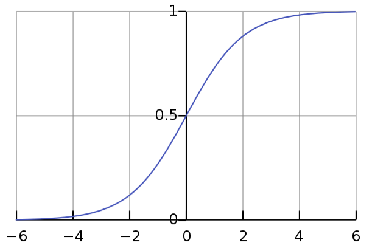

LR 与 Sigmoid
Table of Contents
本文目的
LR 也就是 Logistic Regression，但是在学习的过程中，有些不解的疑惑。 下面的内容就是这篇文章的主要内容：
- 为什么有了 Linear Regression, 又会出现一个 Logistic Regression?
- Logistic Regression 明明是一个回归模型，为什么会用于分类？
- Logistic Regression 叫法的由来是什么？
- 关于 LR 中使用为什么使用 Sigmoid 函数，而不是其他的？
Logistic Function
Logistic Function（Logistic Curve） 是下面的这种形式： \[{\displaystyle f(x)={\frac {L}{1+e^{-k(x-x_{0})}}}}\]
其中的 x0, L, k 会决定这个函数的形式，当 x0=0, L=1, k=1 时就是我们常见的 Sigmoid 函数了：

我们可以在 WolframAlpha 上调戏一下这个公式。
关于“为什么叫 Logistic Regression?”这个问题就不言而明了，正是因为它使用了 Logistic Function，所以才有了 Logistic Regression 这个名字。
但是问题又来了，为什么会使用 Sigmoid 函数也就是 Logistic Function 呢？
Logistic Regression 回归模型
在机器学习中，我们用 Logistic Regression 来进行分类问题的处理，一般是处理二分类问题，其实它还可以处理多分类的问题。
既然是处理模型的分类问题，为什么还叫 Regression 呢？其实，它就是一个回归模型，我们看 Logistic Function 应该也明白了，它的输出 Y 是一个概率。只是碰巧我们可以拿它来进行分类的处理。
LR 与 Sigmoid
现在就出现一个重要的问题，“为什么 LR 会使用 Sigmoid，而不是其他的函数？”。
其实这个问题本身就是不对的，前面解释了正是因为 Sigmoid 才有了 LR， 而不是 LR 选择了 Sigmoid。所以这里的本质问题是：为什么使用线性模型进行回归学习要使用 基于 Sigmoid 的 LR，而不是其他的 Regression。如果我们能够找到一个函数 F ，也能达到下面的功能的话，是不是也可以用 F Regression 呢？ \[\begin{equation} H(x)={\begin{cases}0,&x<0\\{\frac{1}{2}},&x=0\\1,&x>0\end{cases}}\tag {1} \end{equation}\]
到这里会出现一个新的概念: 广义线性模型(GLM)。如何使用线性模型进行分类任务？我们可以在广义线性模型中找到答案：找到一个单调可微的函数将分类认为的真实标记 y 与线性回归模型(w*x + b)的到的预测值联系起来，也就是使用一个(link function)。这里也解释了为什么公式 (1) 无法使用。
现在的一个关键就是这个 link function 是什么呢？ 事实情况是这里的 link function 有三个，我们可以在 Links Function 了解一下。 这个解释了为什么我们会选择使用 sigmoid function, 也就是 logit link function。关于一个分布对应什么样的 link function，是有一些条件的， 具体可以看 广义线性模型 。
最终，关于最初的疑问其实是历史的选择，我们可以选择其他的 regression 来做这个问题，但是这里是有好坏之分的。这也是为什么选择 Sigmoid 的原因。 它有如下的优点：
- sigmoid 函数连续，单调递增
- 对 sigmoid 函数求导非常的方便
\[S(t)={\frac {1}{1+e^{-t}}}.\]
\[{\displaystyle S'(t)=S(t)(1-S(t)).}\]
缺点：
这里主要看应用场景了，如果在深度学习中，它相比于 ReLU 确实是不好的。
- sigmoid 函数反向传播时，很容易就会出现梯度消失的情况
- sigmoid 作为激活函数计算量大（指数运算）